Feeds, sleeps, diapers and notes land as messages in one thread you share with your partner. Leona keeps count and speaks up when a feed is due. Repas, dodos, couches et notes arrivent en messages dans un fil partagé avec votre partenaire. Leona tient les comptes et prend la parole quand un repas approche.
Free · iOS 17 or later · English, French and Finnish Gratuite · iOS 17 ou plus récent · anglais, français et finnois
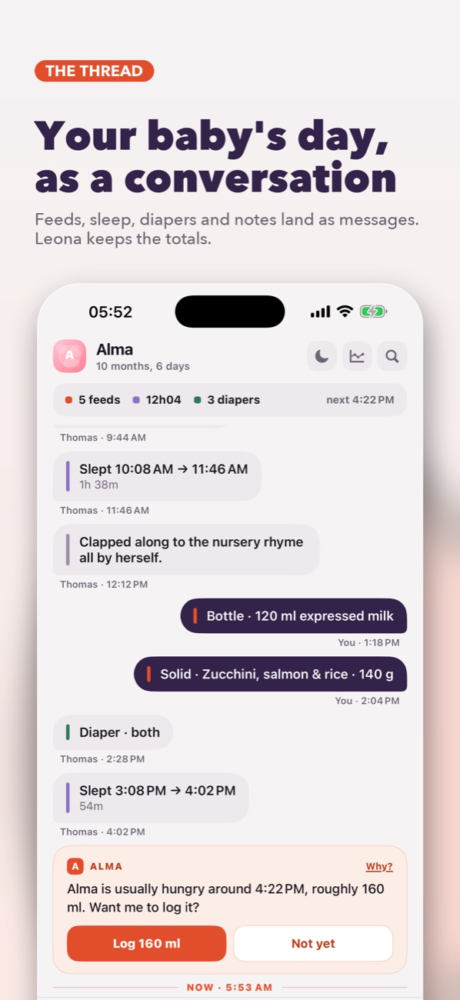
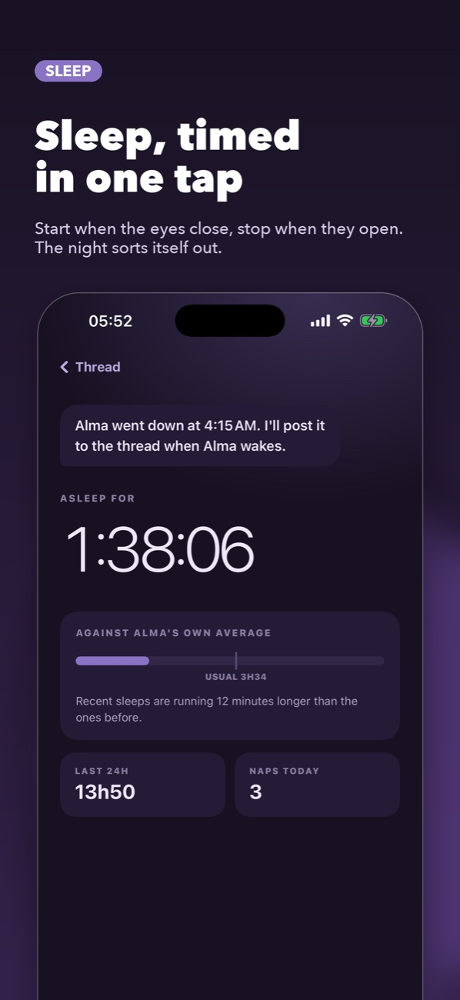
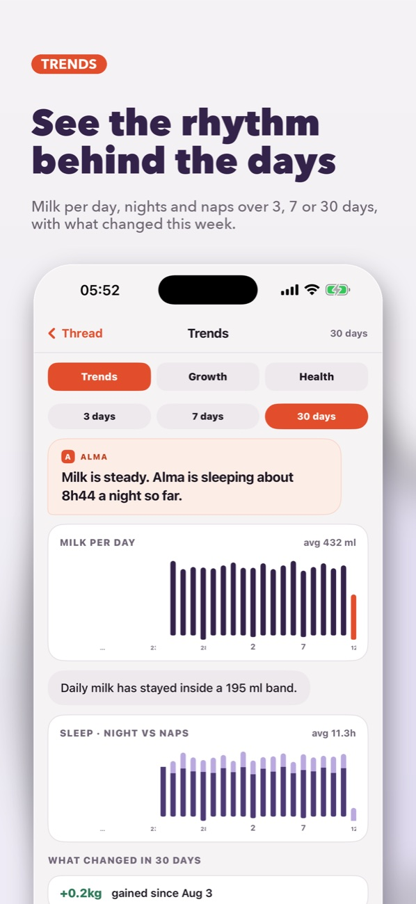
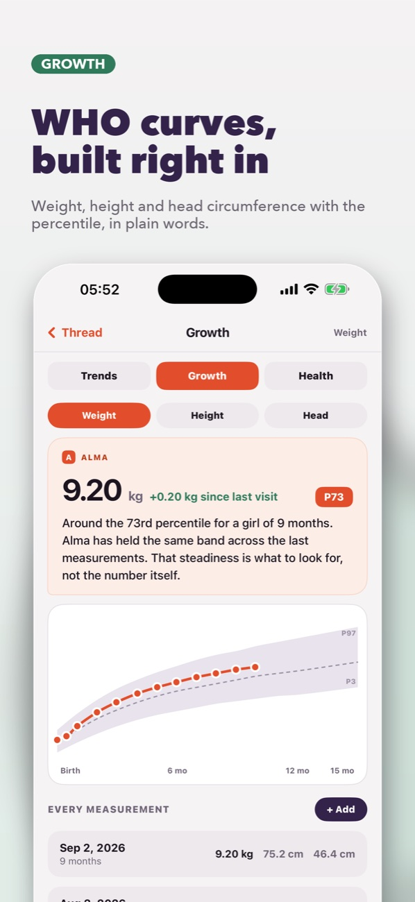
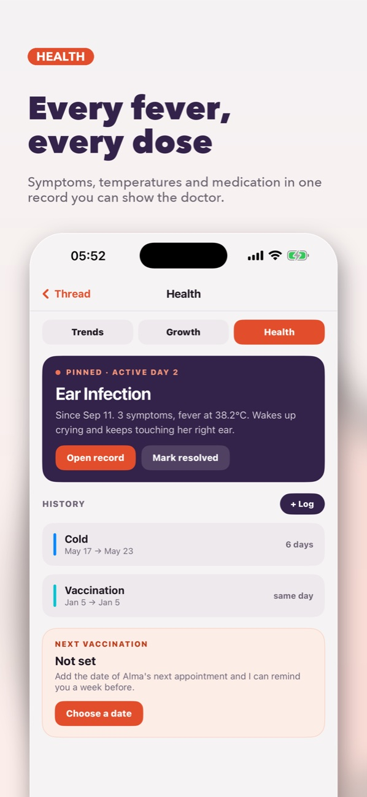
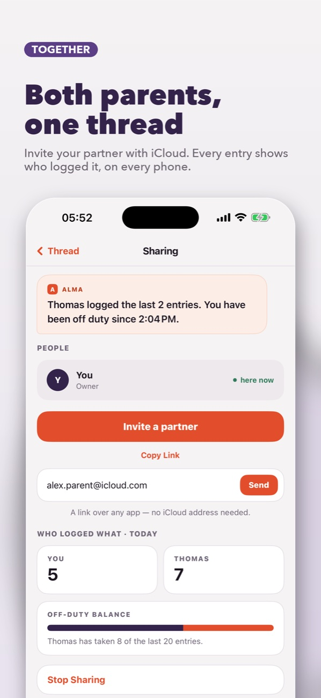
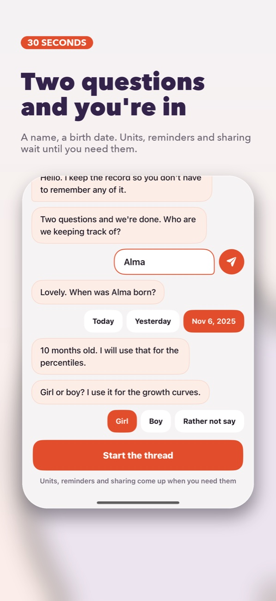
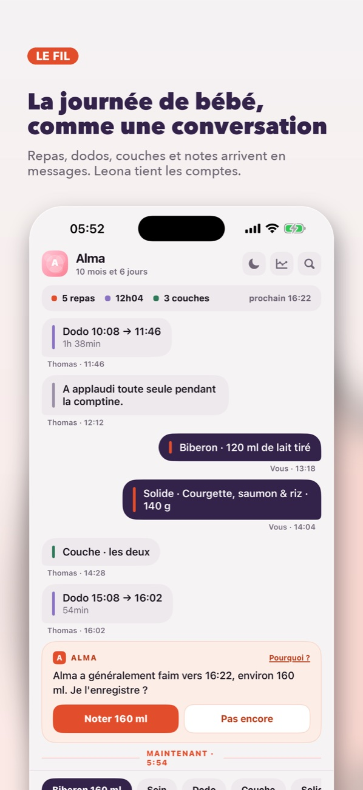
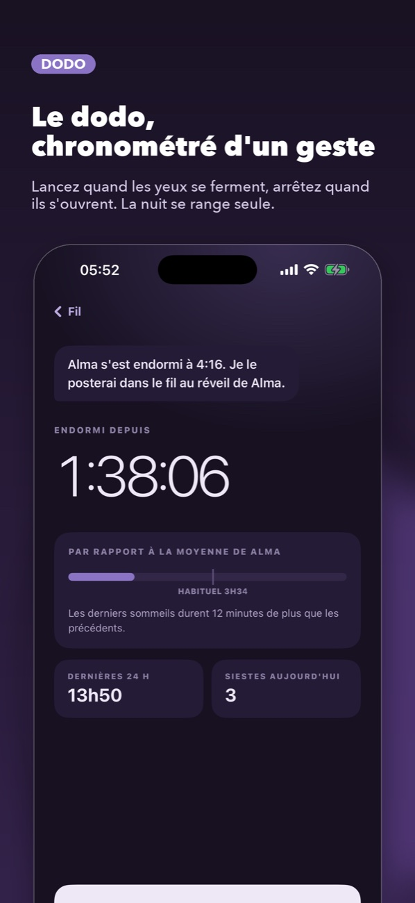
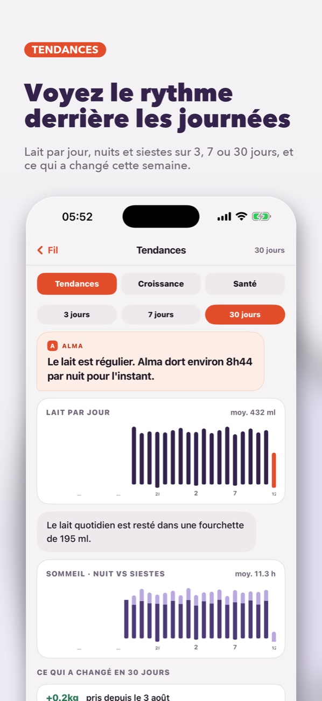
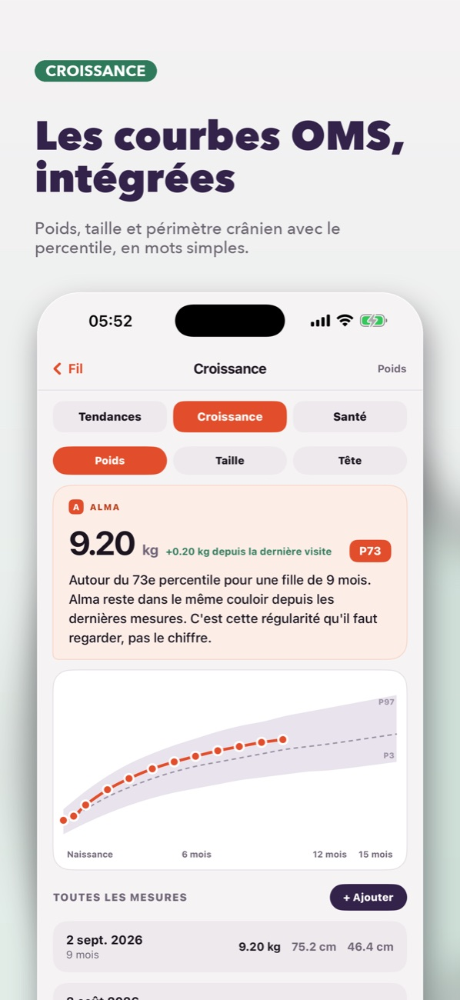
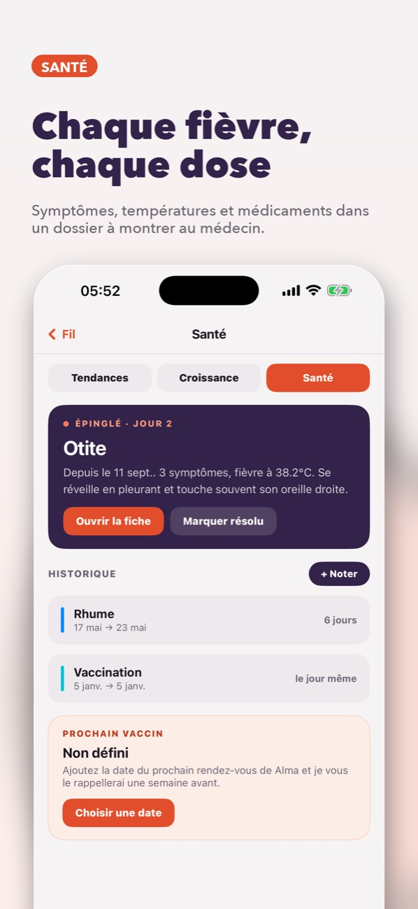
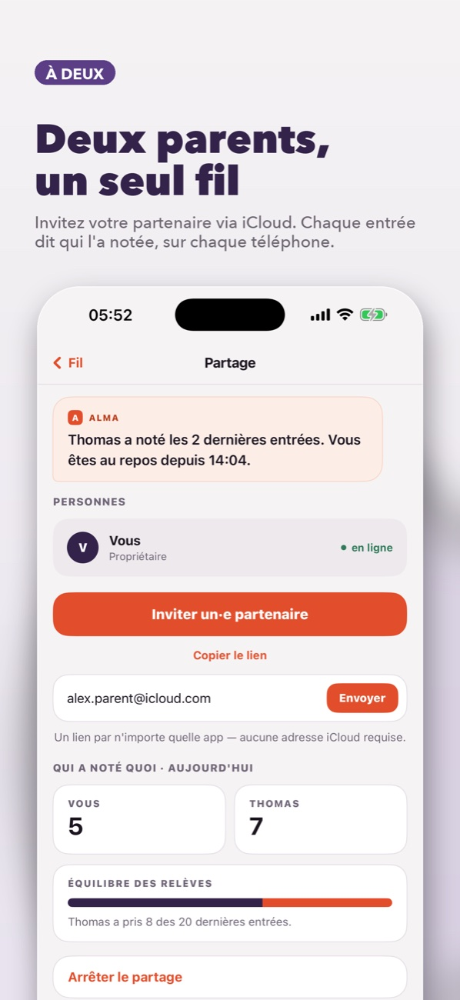
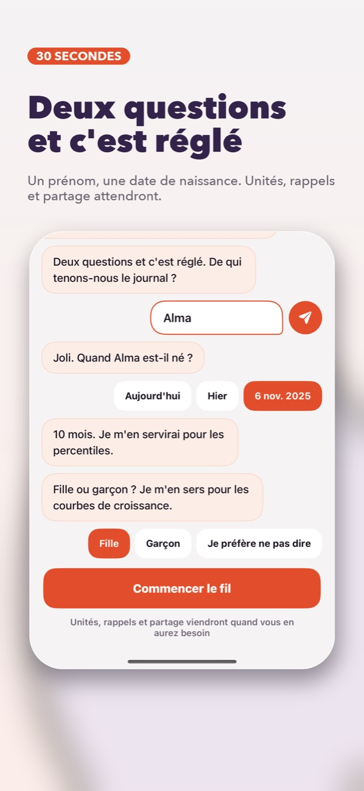
What Leona doesCe que fait Leona
No dashboard to decode. The day reads top to bottom, like the messages you already exchange about the baby. Pas de tableau de bord à décoder. La journée se lit de haut en bas, comme les messages que vous échangez déjà au sujet de bébé.
Every entry is a bubble: yours on the right, your partner's on the left, with the time and who logged it. Day dividers keep the flow readable, and a marker shows what happened while you were away.
Chaque entrée est une bulle : les vôtres à droite, celles de votre partenaire à gauche, avec l'heure et qui l'a notée. Des séparateurs par jour gardent le fil lisible, et un repère montre ce qui s'est passé pendant votre absence.
When a feed is due, Leona posts the usual time and amount. One tap logs it. "Not yet" makes her wait, and her answer stays in the thread. Mute her whenever you like.
Quand un repas approche, Leona propose l'heure et la quantité habituelles. Un tap pour noter. « Pas encore » la fait patienter, et sa réponse reste dans le fil. Vous pouvez la faire taire quand vous voulez.
Start a sleep or a feed and it stays pinned at the bottom of the thread with its timer. Switch sides, pause, stop. The finished session lands in the flow with its duration.
Lancez un dodo ou une tétée : la session reste épinglée en bas du fil avec son chrono. Changez de côté, mettez en pause, arrêtez. La session terminée rejoint le fil avec sa durée.
Feeds, sleep and diapers over the last days in plain words. Weight, height and head circumference on WHO percentile curves. Illnesses, temperatures and vaccinations, with a reminder a week before the next one.
Repas, sommeil et couches des derniers jours, en mots simples. Poids, taille et périmètre crânien sur les courbes de percentiles OMS. Maladies, températures et vaccinations, avec un rappel une semaine avant la prochaine.
Invite by link from any app. Both of you log into the same thread through iCloud, see who logged what today, and who has been off duty for how long.
Invitez par lien depuis n'importe quelle app. Vous notez tous les deux dans le même fil via iCloud, vous voyez qui a noté quoi aujourd'hui, et qui est de repos depuis combien de temps.
Print the thread as a keepsake book, or export the raw data as CSV. A night theme that can switch on by itself at dusk. Metric or imperial units.
Imprimez le fil en livre souvenir, ou exportez les données brutes en CSV. Un thème nuit qui peut s'activer tout seul au crépuscule. Unités métriques ou impériales.
LoggingSaisie
The bar at the bottom of the thread holds five chips: Bottle, Breast, Sleep, Diaper, Solid. The bottle chip already shows the amount Leona expects. Tap a chip, adjust if needed, send. Anything else goes in as a note, typed like a message.
Tap any bubble to open the record: start and end, who logged it, and how it compares with the baby's average. Edit it or remove it from there.
La barre en bas du fil porte cinq puces : Biberon, Sein, Dodo, Couche, Solide. La puce biberon affiche déjà la quantité que Leona attend. Un tap sur la puce, un ajustement si besoin, envoi. Tout le reste part en note, tapée comme un message.
Un tap sur une bulle ouvre la fiche : début et fin, qui l'a notée, et l'écart avec la moyenne de bébé. Vous la modifiez ou la retirez depuis là.
Getting startedPour commencer
Two questions. Girl or boy is optional and only feeds the growth curves.
Deux questions. Fille ou garçon reste facultatif et ne sert qu'aux courbes de croissance.
A couple of feeds and Leona starts predicting the next one.
Deux ou trois repas et Leona commence à prédire le suivant.
Send the link over Messages, WhatsApp or mail. Their entries appear in your thread, and yours in theirs.
Envoyez le lien par Messages, WhatsApp ou mail. Ses entrées apparaissent dans votre fil, et les vôtres dans le sien.
Entries stay on your device and in your own iCloud. Sharing goes through iCloud to the people you invite, and nobody else. Leona's suggestions are computed on the phone from your own entries. Read the privacy policy.
Les entrées restent sur votre appareil et dans votre propre iCloud. Le partage passe par iCloud vers les personnes que vous invitez, et personne d'autre. Les suggestions de Leona sont calculées sur le téléphone à partir de vos propres entrées. Lire la politique de confidentialité.